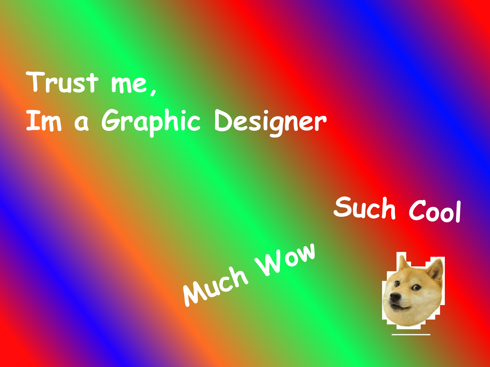

Popularity
The popularity for Comic Sans rose very quickly after it came out, everyone used it immensely for how simple and fun it looked. However it was used too often, there was a point where every font and piece of writing you saw was just Comic Sans. The popularity of Windows 95 helped accelerate the popularity of Comic Sans. Even businesses and advertisements started using Comic Sans. This all led to it becoming infamous. Click on the Infamous button to find out more. |
 |
Quote from the inventor
"People who don't like Comic Sans don't know anything about design."- Vincent Connare
©Copyright 2020. Cooper! Contact: ComicSansLover@live.com.au